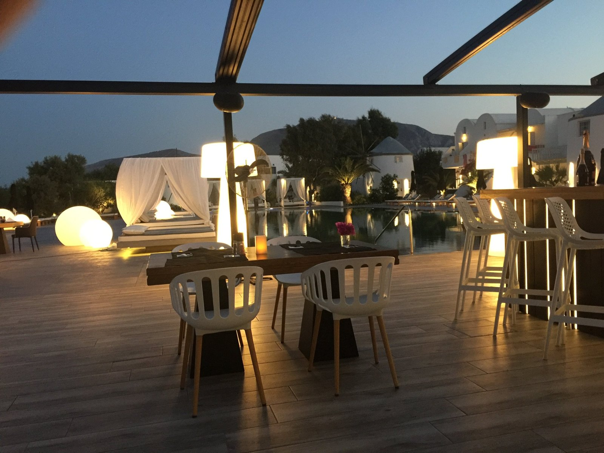
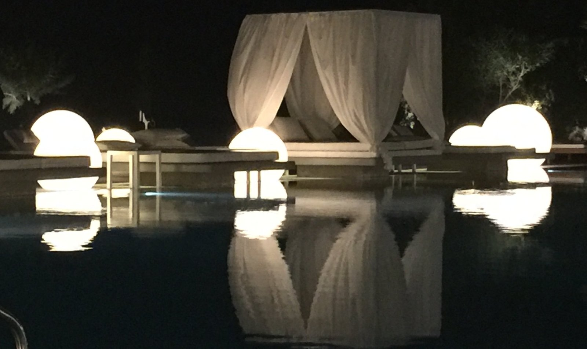
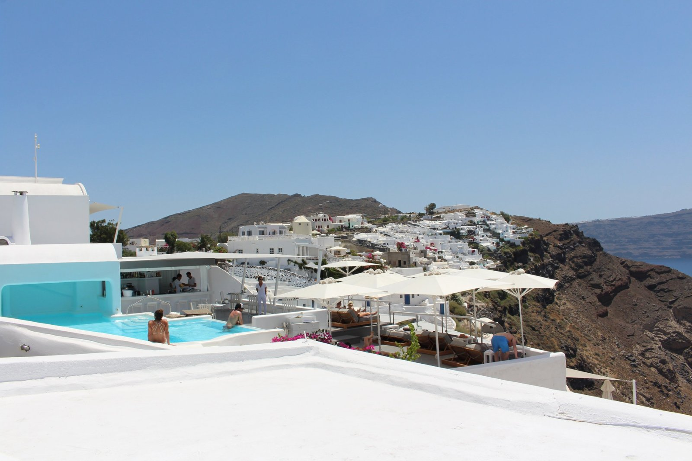
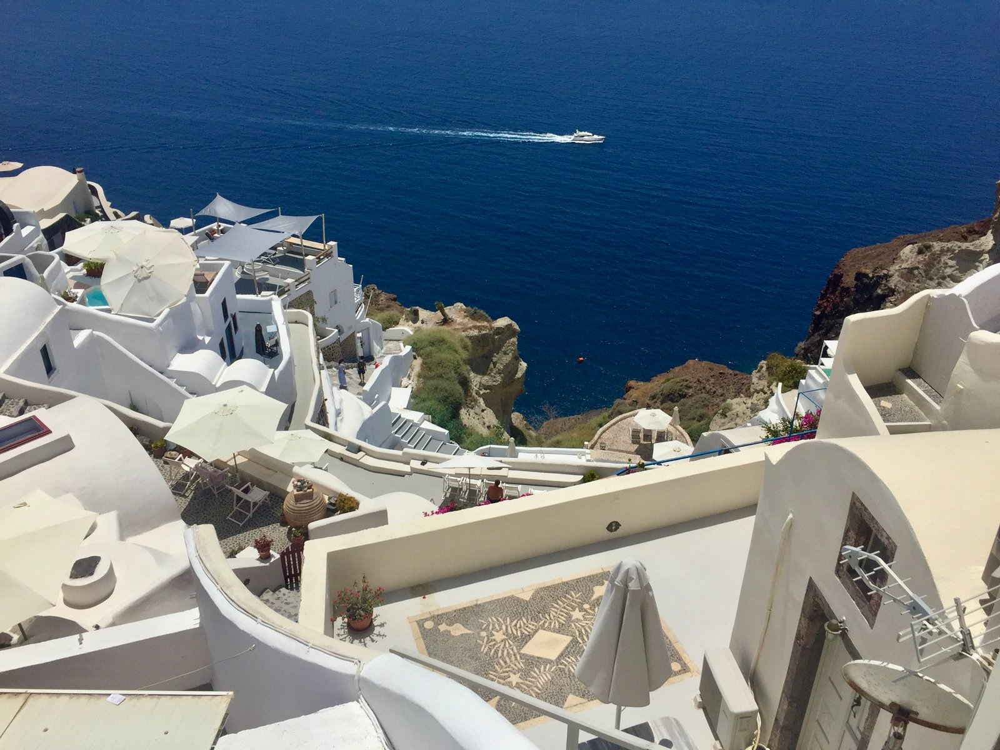
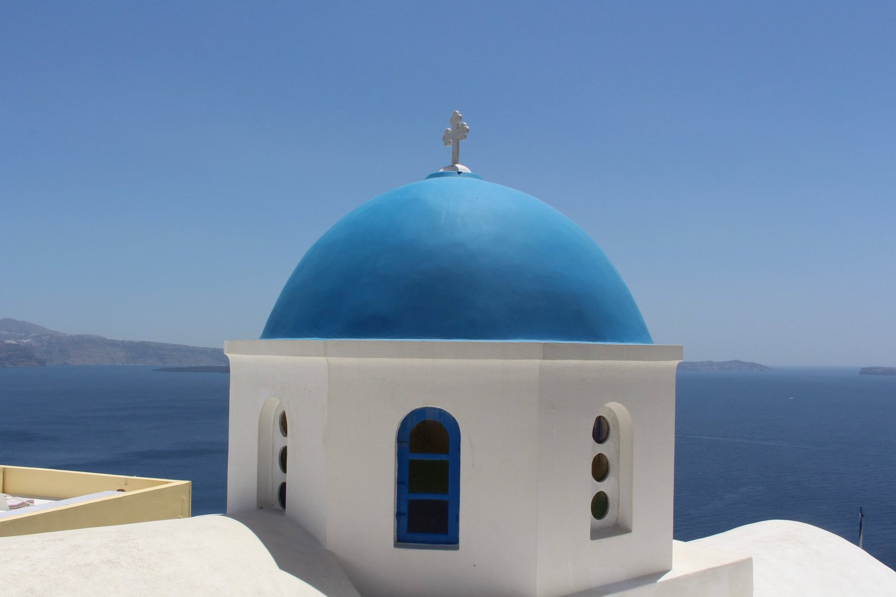
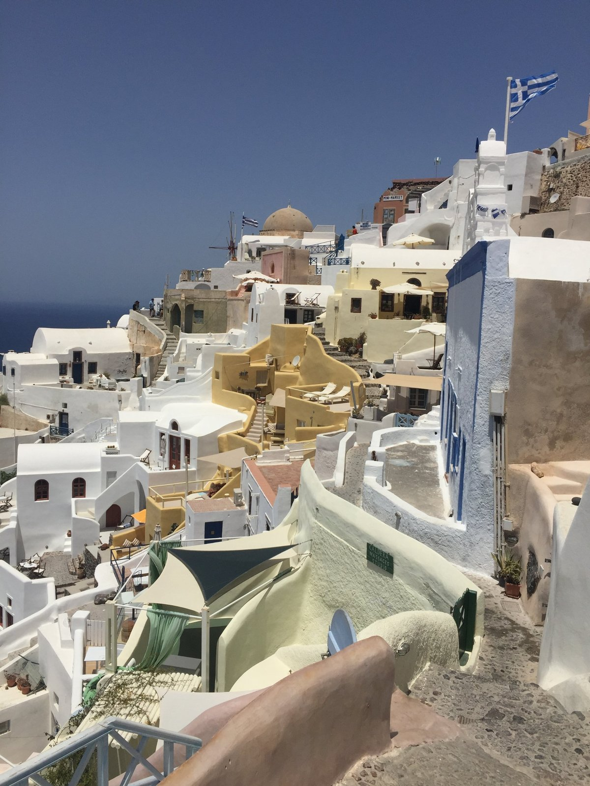
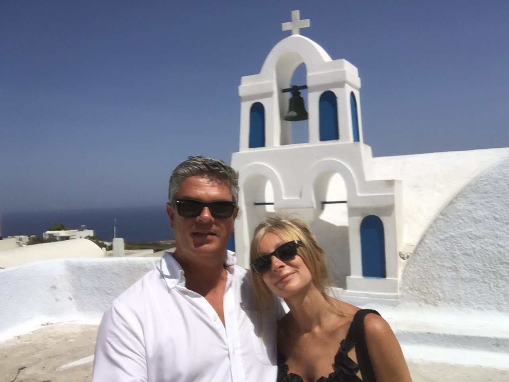
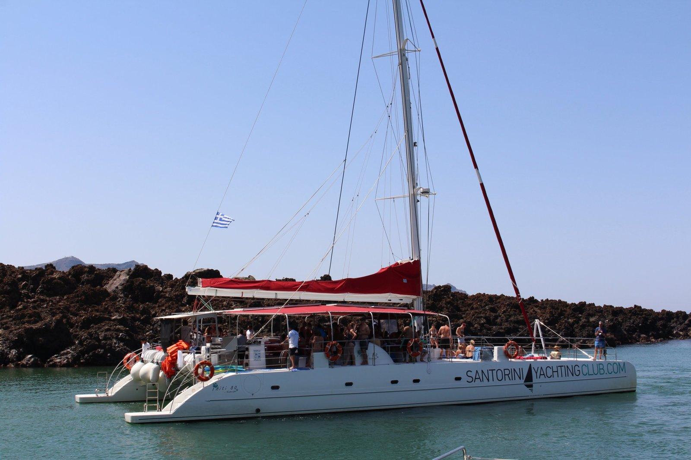
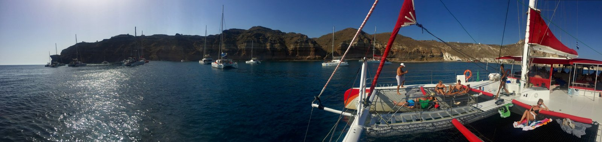
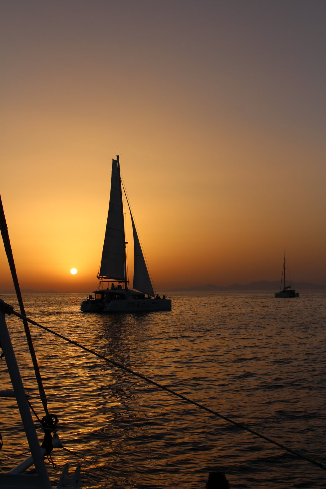

Santorini is one of those places that seems to have been designed specifically for postcards. Whitewashed buildings cling to dramatic volcanic cliffs, blue-domed churches overlook the sparkling Aegean, and sunsets are so spectacular that half the island appears to be holding a camera aloft to capture them.
It's probably one of the most photographed islands in Greece, and having seen it for ourselves, I can understand why.
But is Santorini all it's cracked up to be? Well, that's a slightly more complicated question. We found some beautiful places, enjoyed a lovely hotel and took in some extraordinary scenery. However, there were also crowds, eye-watering prices and a few occasions when we wondered whether we'd accidentally wandered into a rather expensive theme park for holidaymakers.
Santorini certainly has its charms, but it's an island best approached with your eyes open – and possibly a fairly healthy holiday budget.
FIRST IMPRESSIONS – OUR STAY AT NIKKI BEACH RESORT
We stayed at Nikki Beach Resort & Spa, at Agia Paraskevi, on the eastern side of the island. It's a beautiful property and, if your idea of a holiday involves a gorgeous swimming pool, a private beach and the occasional cocktail without having to venture very far, it certainly ticks those boxes.

The pool area is a real highlight, with a swim-up bar and plenty of space to relax. There's also direct access to the beach, along with spa facilities for anyone wanting a little extra pampering.
Breakfast deserves a mention too. There was a fantastic choice, with the option of a buffet or an à la carte breakfast served by the pool or beach. It's a rather lovely way to start the day, particularly when the alternative is rushing around trying to find somewhere open for breakfast.

The location, however, wasn't quite as perfect as the hotel itself. It's only around ten minutes from Santorini Airport, which is convenient for transfers, although you do occasionally get a reminder that planes are rather fond of flying overhead.
Being close to the airport has its disadvantages!
The hotel is also somewhat removed from the island's main attractions. Having a hire car makes life considerably easier, as relying on buses and taxis can restrict how freely you explore. It's a lovely place to stay if you're happy spending time at the resort, but less convenient if you want to pop out for an evening stroll or explore different villages every day.
KAMARI – A SEASIDE RESORT WITH PLENTY GOING ON
Our first proper outing took us to Kamari, one of Santorini's better-known seaside resorts.
Kamari has a long stretch of volcanic black sand, a promenade lined with restaurants and bars, and plenty of shops selling everything from beach essentials to the usual holiday souvenirs. There's certainly no shortage of places to eat or somewhere to stop for a drink.
It's also generally considered a more accessible and affordable base than the glamorous caldera villages, although Santorini's idea of affordable can sometimes be rather different from ours!
The resort has a lively holiday atmosphere, but we found it a little too modern and commercialised for our tastes. It felt much more like a conventional Mediterranean beach resort than the traditional Greek village experience we tend to enjoy.
That's not necessarily a criticism. If you're looking for a beach holiday with everything close at hand, Kamari makes a perfectly sensible choice. It just wasn't somewhere that particularly captured our imagination.
FIRA – THE CAPITAL WITH THE MILLION-DOLLAR VIEW
If there's one place that really showcases Santorini's extraordinary geography, it's Fira, the island's capital.
Perched high above the caldera, the town seems to cling almost impossibly to the edge of the volcanic cliffs. Below, the deep blue waters of the Aegean stretch out towards the volcanic islands of Nea Kameni and Palaia Kameni.

The views are spectacular, and as you wander through the narrow lanes, you'll find whitewashed buildings, little churches, boutique shops, restaurants and terraces seemingly designed to make you stop every few minutes for another photograph.
Fira is considerably livelier than some of the smaller villages. During the day, visitors fill the shopping streets, while in the evening the restaurants and bars overlooking the caldera become particularly popular.
There are plenty of opportunities to enjoy a drink with a view, although we'd suggest checking the prices before ordering. A spectacular panorama doesn't necessarily mean a spectacularly good-value bill!
The cable car and the Old Port
One of the interesting ways to explore Fira is to take the cable car down to the Old Port. The journey takes around three minutes and gives you a wonderful perspective of the steep cliffs and buildings above.
The Old Port sits beneath the town and is also where many boat excursions depart. You can arrange trips to the volcanic islands, including Nea Kameni, where visitors can walk across the volcanic landscape, and Palaia Kameni, known for its warm mineral-rich waters.
A word of warning: the port can become extremely busy when cruise ships are in the area. With thousands of passengers arriving on the island, queues for the cable car can build up considerably. If you're planning to visit, timing is everything.
OIA – THE VILLAGE THAT TOOK OVER INSTAGRAM
And then there's Oia (pronounced Ee-ah), probably the most recognisable image of Santorini and the place that appears on just about every Greek holiday brochure.

We'd seen the photographs countless times, but nothing quite prepares you for the real thing. The village is beautiful. Whitewashed houses tumble down the cliffs, blue-domed churches stand out against the brilliant blue sky, and little terraces overlook the caldera.

The architecture is fascinating, too. Many of the traditional buildings were carved into the volcanic rock, creating the distinctive cave houses that Santorini is famous for. Oia was once an important maritime settlement, supported by shipping and trade, before tourism transformed it into the international attraction it is today.
We wandered through the narrow streets, passing boutique shops, attractive restaurants and bars with views that would make even the most determined homebody consider moving to Greece.

But here's where the reality starts to differ slightly from the photographs.
Oia is incredibly popular, and it's not difficult to understand why. Unfortunately, its popularity comes at a price. The streets can become absolutely packed, particularly when cruise ship passengers arrive, and at times moving through the narrow lanes feels rather like being part of a very slow-moving human procession.
Then there's the heat. We visited during the warmer months, and the combination of blazing sunshine, pale stone buildings and very little shade made wandering around quite an undertaking. On some streets, there seemed to be nowhere to escape the sun, and despite the spectacular views, we were soon looking for somewhere to sit down.

Oia is particularly famous for its sunsets, with visitors gathering around the old castle ruins and along the cliffside to watch the sun disappear over the Aegean. It's undoubtedly a beautiful sight, but expect company. Quite a lot of it.
There are lovely places to stop for a drink, but be prepared for premium prices, especially at establishments with the best views.
Oia is absolutely worth seeing, if only to appreciate the extraordinary setting and architecture. Just don't expect to have those famous little lanes all to yourself.
WHAT ELSE IS THERE TO SEE AND DO IN SANTORINI?
Although Fira and Oia tend to steal the limelight, there's more to the island than its famous caldera views.
The Fira to Oia hike
One of the best ways to appreciate Santorini's landscape is to walk the spectacular coastal route between Fira and Oia. The trail follows the edge of the caldera, passing through settlements including Firostefani and Imerovigli, with magnificent views along the way.
The walk is approximately 10 kilometres and generally takes between 2.5 and 3 hours, depending on your pace and how often you stop for photographs.
It's a wonderful experience for keen walkers, but don't underestimate the conditions. In summer, temperatures can become extremely high, and much of the route offers very little shade. An early morning start or a late afternoon walk is a much better idea than attempting it in the midday heat.
Santorini's volcanic islands

Boat excursions from the Old Port in Fira offer the opportunity to visit the volcanic islands. Nea Kameni is particularly interesting, with its rugged volcanic terrain and walking trails around the crater area. Some excursions also include a stop near the hot springs at Palaia Kameni.
Sunset cruise – our holiday highlight
One experience that definitely deserves a place on the list is a sunset cruise, which turned out to be the highlight of our Santorini holiday.

There's something rather special about seeing the island from the water. Away from the busy streets and crowded viewpoints, you get a completely different perspective of those dramatic volcanic cliffs, the whitewashed villages perched above them and the vast blue expanse of the Aegean.
Our cruise included plenty of drinks (which certainly helped the holiday atmosphere along!) and a meal on board, so it was much more than simply hopping on a boat for a quick look around.

As the sun began to drop towards the horizon, the scenery became even more spectacular, with the island taking on those gorgeous golden and pink hues that Santorini is famous for.
And the best part? You could actually enjoy the sunset without having to squeeze yourself into a tiny spot alongside hundreds of other people all trying to get exactly the same photograph!
If you're visiting Santorini, I'd definitely recommend adding a sunset cruise to your itinerary. It's a wonderful way to experience the island, enjoy the scenery and have a thoroughly relaxing evening.
For us, it was easily one of the best things we did while we were there.
Santorini's black sand beaches
If you're expecting endless stretches of golden sand, Santorini might surprise you. Its volcanic origins have created some rather different beaches.
Perissa and Perivolos, on the southeastern coast, are among the island's best-known beach areas. Their dark volcanic sand, beachfront restaurants and water sports facilities make them popular with visitors.
Kamari is another well-established beach resort, while Exo Gialos, closer to Fira, offers a quieter alternative for those wanting to escape some of the busier resort areas.
Explore beyond the famous villages
It's also worth considering places such as Pyrgos, a traditional hilltop settlement with winding lanes and panoramic views, and the archaeological site of Akrotiri, where the remains of an ancient Minoan settlement were preserved beneath volcanic ash.
These offer a different perspective on Santorini, away from the famous sunset spots and luxury boutiques.
PRACTICAL TIPS FOR VISITING SANTORINI
- Getting around: Hiring a car gives you considerably more freedom, particularly if you're staying away from Fira. Buses connect the main settlements, but services can be busy and timetables vary depending on the season. Taxis and private transfers are alternatives, although costs can quickly add up. Read our car hire tips before you book.
- When to visit: July and August are particularly busy and hot. May, June, September and October can offer a more comfortable experience, with fewer visitors and generally pleasant temperatures. See our guide to when to go.
- Cruise ship crowds: Check cruise ship schedules if possible. Fira and Oia can become particularly congested when several ships are visiting. Early mornings are often a much better time to explore.
- Budget: Santorini has a reputation for being expensive, and it's well deserved in many of its most popular locations. Restaurants and bars with caldera views can command premium prices, so check menus before settling down.
- Beaches: Remember that much of the island's coastline is volcanic, meaning dark sand and pebbles rather than traditional golden beaches. Beach shoes can be useful.
- Ferries: Santorini is well connected to Athens and the other Cyclades. Our island hopping guide explains how the ferries work.
OUR VERDICT – IS SANTORINI WORTH VISITING?
There's no denying that Santorini is beautiful. The dramatic caldera, extraordinary architecture and incredible views make it one of the most visually impressive Greek islands we've visited. Oia really is as pretty as the photographs suggest, and Fira offers scenery that is difficult to beat.
However, beauty alone doesn't necessarily make somewhere a favourite holiday destination.
For us, Santorini felt rather too geared towards tourism, with much of its traditional Greek character overshadowed by luxury hotels, expensive restaurants and the sheer number of visitors. We missed the relaxed atmosphere and authentic village charm that we enjoy so much elsewhere in Greece.
Would we return? Probably not. But we're glad we went, because sometimes you need to visit somewhere yourself rather than simply relying on the glossy photographs.
Santorini is undoubtedly worth seeing at least once. Just go knowing what to expect, choose your accommodation carefully, keep an eye on the bar prices and, if possible, avoid the busiest months.
It's a beautiful island, but it wasn't quite our cup of tea.
Or perhaps, given the prices, our glass of wine!